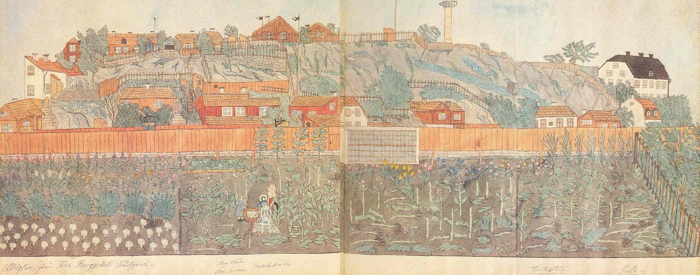

|
GAMLA TJÄRHOVSGATAN Motivet är främst Stigberget med sin blandning av husindivider, täppor, flöjlar, uthus och betande getter. (Getmjölk ansågs som ett särskilt stärkande näringsmedel och gavs till klena barn vars föräldrar kunde betala den dyra hälsodrycken.) Utsiktstornet i trä, kallat Tandpetaren, var rest 1827 åt en välkänd hovtandläkare vid namn Dubost. Mamsell Sjöberg har fått både sin gustavianska stol och alrotsbordet utburet i den trädgård som ligger innanför det höga, röda planket längs Tjärhovsgatan. Den stora trädgårdstäppan är fylld av digitalis, bärbuskar, kål, tobak och tulpaner. Målarinnan har hunnit konturera vänsterpartiet i sin avlånga bild. |
Hon studeras av två små barn, Aug. Ström och Edla Jeppson. Två trädgårdsflickor sällar sig till de två, och en katt tittar på dem från taket Tjärhovsgatan 47, mittöver deras huvuden. Det stora bladet har sytts ihop av tvenne mindre blad och två veck därtill har bidragit att hålla samman alla enskildheter och skapa litet av stabiliserande symmetri. På baksidan har ett par av originalets huskonturer fyllts i och tillfogats följande notiser. Angående husen på krönets mitt: Brunnit Pingstafton 1868 Kl 1/2 4 e. m.
Angående huset Tjärhovsgatan 45:
Brunnit Natten Mellan |

|
På en tredje bild - från femtiotalet - ser vi ned i fru Bergqvists vackra trädgård. Mamsell Sjöberg sitter i trädgården
vid ettbord och håller på med att utarbeta en av sina akvareller. På trädgårdens norra sida löper Tjärhovsgatan med husraden från nummer 43 till 55. Till höger syns det s k Kråkslottet. Uppe på Stigberget reser sig det av hovtandläkaren Dubost 1827 uppförda utsiktstornet, en träkolonn med en inre spiraltrappa, som förde upp till ett krön, varifrån man hade en underbar utsikt över staden.
|
Kolonnen, vars upphovsman var överstelöjtnanten och arkitekten F. Blom, låg
inom Dubosts egendom Lilla Ersta. Anordningen hade av
stockholmarna döpts till "Tandpetaren på Söder". Senare anteckningar av mamsell Sjöberg på akvarellens baksida omförmäler, att det lilla trähuset Tjärhovsgatan 45 (inom nuv kv Justitia) nedbrann natten mellan den 2 och 3 november 1870 klockan 4 om morgonen, samt att tvenne små idylliska kåkar på berget, alldeles ovanför Tjärhovsgatan 47, rönte samma öde pingstaftonen 1868 klockan 1/2 4 på eftermiddagen. |